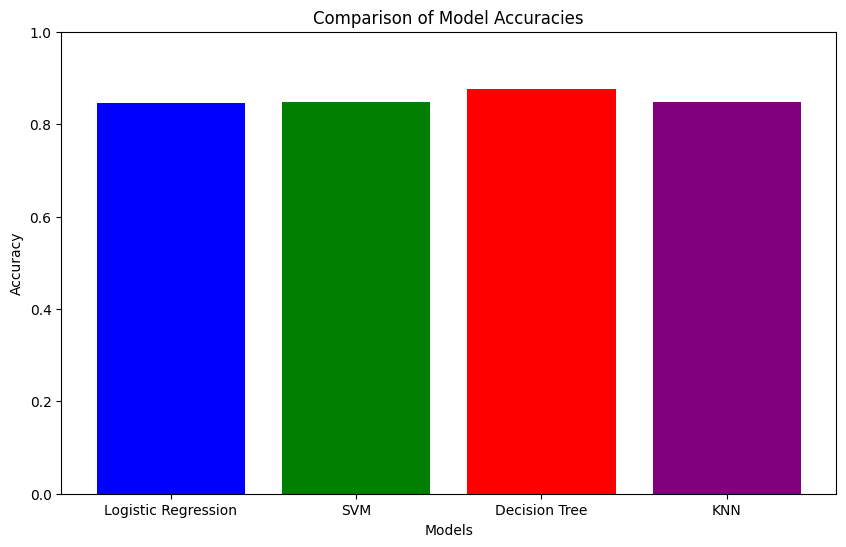
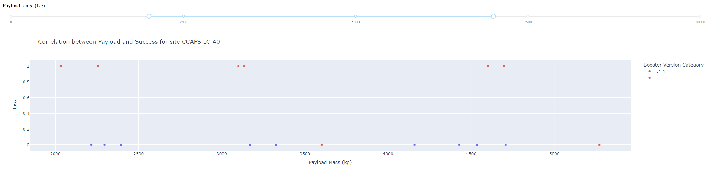
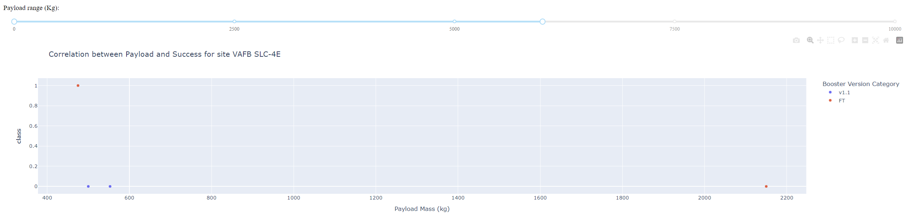
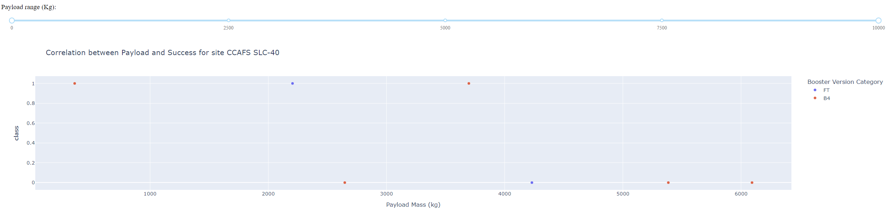

Appendix
Python Code Snippets:
# Import necessary libraries
import pandas as pd
import numpy as np
import matplotlib.pyplot as plt
import seaborn as sns
from sklearn import preprocessing
from sklearn.model_selection import train_test_split, GridSearchCV
from sklearn.linear_model import LogisticRegression
from sklearn.svm import SVC
from sklearn.tree import DecisionTreeClassifier
from sklearn.neighbors import KNeighborsClassifier
# Function to plot confusion matrix
def plot_confusion_matrix(y, y_predict):
from sklearn.metrics import confusion_matrix
cm = confusion_matrix(y, y_predict)
ax = plt.subplot()
sns.heatmap(cm, annot=True, ax=ax)
ax.set_xlabel('Predicted labels')
ax.set_ylabel('True labels')
ax.set_title('Confusion Matrix')
ax.xaxis.set_ticklabels(['did not land', 'land'])
ax.yaxis.set_ticklabels(['did not land', 'landed'])
plt.show()
Charts and Visualizations:




SQL Queries:
SELECT * FROM launch_data WHERE outcome = 'Success';
SELECT COUNT(*) FROM launch_data WHERE booster_version = 'FT';
Notebook Outputs:
Logistic Regression Accuracy: 0.8464285714285713
SVM Accuracy: 0.8482142857142856
Decision Tree Accuracy: 0.875
KNN Accuracy: 0.8482142857142858